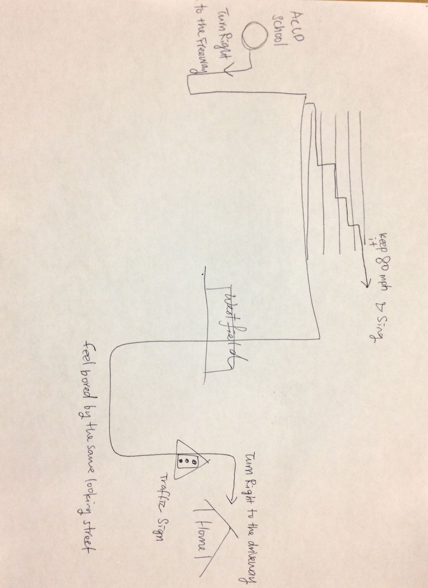
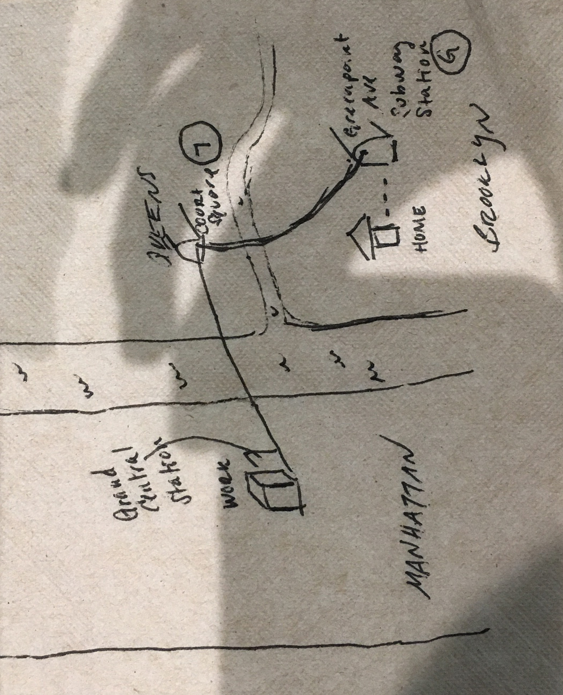

| Segment | Interpreted Gender | Primary Mood | Secondary Mood | Arousal | Temper | Valence | Map |
| 1 | Male | Passionate creativity. Strongly driven. | Love. Belonging. Patronage. | 28.75 "low" | 32.02 "medium" | 9.01 "negative" |  |
| Segment | Interpreted Gender | Primary Mood | Secondary Mood | Arousal | Temper | Valence | Map |
| 1 | Male | Passionate creativity. Strongly driven. | Love. Belonging. Patronage. | 28.75 "low" | 32.02 "medium" | 9.01 "negative" | |
| Segment | Interpreted Gender | Primary Mood | Secondary Mood | Arousal | Temper | Valence | Map |
| 1 | Female | Happiness, satisfaction, love. | Blabbering, friendship and warmth. | 65.79 "neutral" | 23.63 "medium" | 63.98 "positive" |  |
| 2 | Female | Extroverted leadership. Pompousness. | Happiness, elation. | 43.16 "neutral" | 26.93 "medium" | 40.53 "neutral" |
| Segment | Interpreted Gender | Primary Mood | Secondary Mood | Arousal | Temper | Valence | Map |
| 1 | Female | Disappointment and melancholy. Search for warmth. | Self-confidence and self-control in the face of struggle. | 16.29 "low" | 16.89 "low" | 53.05 "neutral" |  |
| 2 | Female | High self-control, actions based on conviction. Need to be free of weakness. | Attempting to mask deep emotions. | 10.79 "low" | 18.78 "low" | 32.82 "neutral" |
| Segment | Interpreted Gender | Primary Mood | Secondary Mood | Arousal | Temper | Valence | Map |
| 1 | Female | Pain and search for emotional warmth and/or recognition. | Painful communication. High sensitivity. | 7.25 "low" | 20.39 "low" | 50.87 "neutral" |  |
| 2 | Female | Coping with an emotional load. Concerns. | Action to achieve goal from a position of weakness and conviction. | 50.62 "neutral" | 14.62 "low" | 46.09 "neutral" | |
| 3 | Female | Pain and search for emotional warmth and/or recognition. | Seeking contact/warmth. Fear of failure. | 70.51 "neutral" | 19.95 "low" | 49.16 "neutral" |